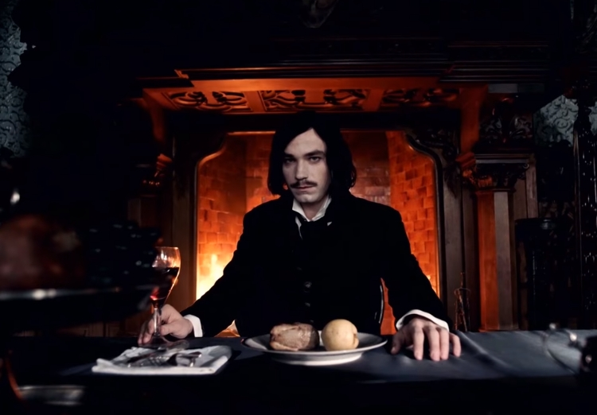
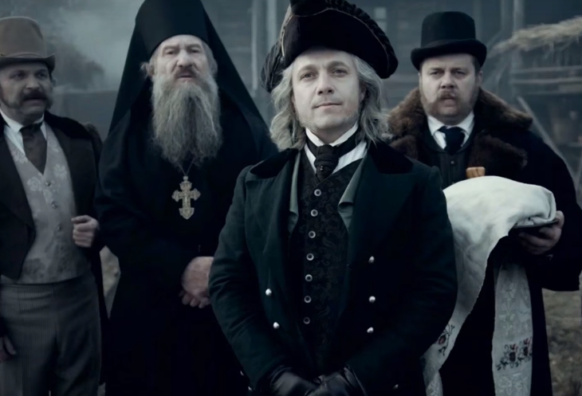
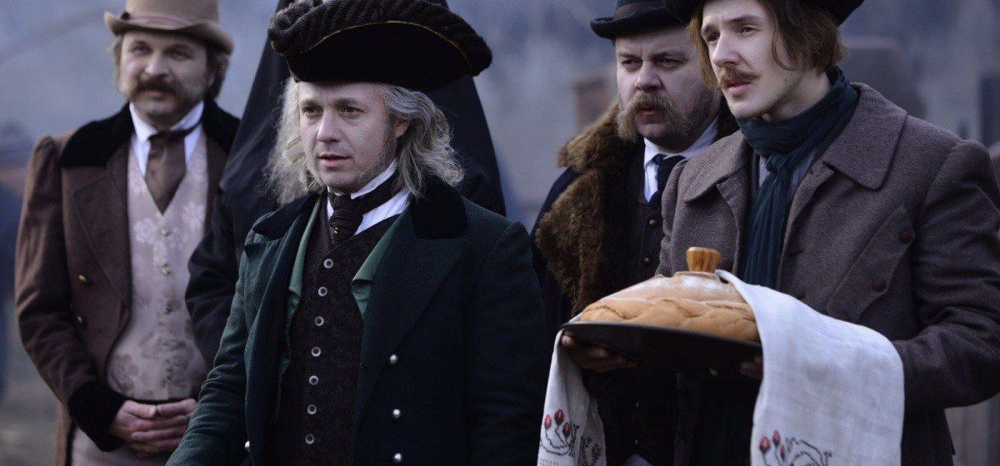
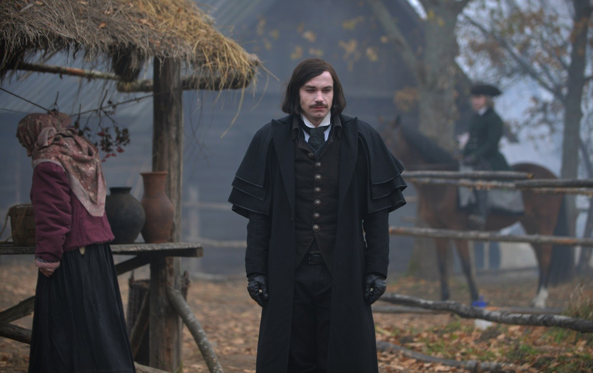

Рік: 2018
Країна: Росія
Жанр: детектив, триллер
Режисер: Єгор Баранов
Актори:Петров Олександр, Меншиков Олег, Євген Стичкін, Артем Сучков, Вілкова Таїсія, Юлія Франц, Цапник Ян, Сергій Бадюк, Євген Ситий, Артем Ткаченко, Марта Тимофєєва, Світлана Киреєва, Кирило Зайцев
Тривалість: 1 година 45 хвилин
Вікові обмеження: 16+
 
 
Незабаром після смерті Гоголя, Бінг назвав його винним у смерті козаків та молодих жінок на руках темного вершника, оскільки він був тим, хто наказав їм сховатися в сараї. Бомгарт не в змозі виконати аналіз після смерті на тілі Гоголя, а дочка Вакули Василина (яка таємно володіє магічними здібностями) проголошує заперечення про загибель Гоголя.
Тіло Гоголя поховане на кладовищі Диканьки, де жили Бін, Вакула, Богомарт та Ліза. Гоголь прокидається у загробному житті, де він зустрічає свого батька, який незабаром вибачається. Несподівано з'являється і розслабляє Гоголя менший і перев'язаний чоловік. Гоголь встигає вийти з труни, поки дивиться жахлива натовп. Гоголь незабаром заарештований Бін, який вважає його «темним вершником» і замкнений у штабі поліції. Якім також охоче заблокований. Він розкриває Гоголю, що людина, яка воскресила його, була людиною, зв'язаною з минулим його сім'ї; На момент народження Гоголя його батько був партнером цієї людини. Коли мати Гоголя народила його, він був ще народжений. Однак людині вдалося воскресити дитину, і історія була збережена в таємниці від Гоголя. Тим часом Олексій зустрічає Оксану (кого він може побачити) і пропонує їй зберегти Гоголя від Диканьки в обмін на повернення до життя.
Сільські жителі раптово атакують штаб-квартиру, підпорядковуючи Бінга, Якіма та партнера Бінь. Вони намагаються спалити Гоголя на колі, але Василина використовує свої здібності, щоб створити дощ, рятуючи Гоголя. Селяни тоді намагаються повісити Гоголя, коли раптом лідер застрелюється в нозі. Стрілець розкривається як Яков Петрович Гуро, який пережив атаку темного вершника, як видно з першого розділу. Він наказує натовпу розпорошити, загрожуючи їм стратою та вигнанням до Сибіру, що вони роблять. Гуро відповів Гоголю, що він маніпулює подіями після його передбачуваної смерті в його спробі знайти справжнього темного вершника. Гоголь вважає, що він підозрює Олексія в якості вершника. В результаті Гоголь, Гуро і Бін вирішили шукати майно Олексія. По-перше, вони нічого не можуть знайти, але Гоголь використовує свої бачення, щоб знайти ручку, яка відкриває прохід за каміном. Вони проходять через прохід, відкриваючи печеру. Всередині вони знаходять Оксану з воді, що випиває з її рота, знак того, що вона воскресло. Олексій несподівано з'являється, і Бінь стріляє його в груди. Оксана раптово оживає, аби вбити секунди пізніше Всадника, який поглинає її кров, створюючи вихор. Коли вихор відступає, тріо жахливо бачить Лізу, показуючи їй бути темним вершником.
Події теперішнього часу (1829 рік) і 163-річної давності (1666 рік) показуються паралельно.
У 1666 році козачий отаман відправляється давати відсіч польським загарбникам на чолі з чаклуном Казимиром Мазовецьким. З усього війська повертається лише один козак і каже, що поляки розбили їх і вбили отамана, і скоро нападуть. Дочки отамана, Ліза і Марія, звертаються до чаклунки-самітниці, і та говорить, що польського чаклуна можна здолати, надівши на нього заговорений обруч; тоді Казимир загубить свою силу і зробиться смертним, але ціна за його вбивство буде страшна. Проте, Ліза і Марія, прокралися в намет Казимира, захоплюють його і відвезли геть, щоб віддати на суд. По дорозі Казимир каже їм, що його прокляття закінчується тільки тоді, коли він когось полюбить, і просить Марію відпустити його — якщо вона відповість йому взаємністю, він зможе відректися від чаклунства і стати нормальною людиною. Але Ліза вирішує вбити чаклуна і вступає з Марією в бій і в підсумку Марія, оступившись, падає в прірву. У гніві обезголовивши Казимира, Ліза сама опиняється під тим же прокляттям: кожні 30 років приносити в жертву 12 дівчат і одного воскреслого, не знаючи смерті, поки не полюбить сама. Марію ж на тому світі зустрічає вогненний голос, який велить відправлятися назад: якщо вона вб'є сестру, то зможе жити, а поки буде поневірятися в образі баби.
У 1829 році Гуро сковує Лізу тим же заговорённим обручем і під час допиту зізнається, що не збирається зраджувати її суду — за завданням таємного товариства, він повинен доставити безсмертного Темного Вершника в Петербург, щоб той поділився секретом безсмертя з Російською Імперією. У разі відмови він загрожує вбити Гоголя. Підслухавши розмову, Гоголь і Бінх кидаються зупинити Якова Петровича, і Бінх, щоб не дати йому здійснити задумане, стріляє в Лізу. Почувши від неї, що 13-ої жертвою повинен був стати сам Микола, але з любові до нього Ліза його пощадила і замість нього вбила Оксану (теж воскреслу) Гоголь знімає зачароване обруч[прояснити], і Ліза знову стає безсмертним Темним Вершником.
Ледве впоравшись з Гуро, Ліза, Гоголь і Бінх бачать на порозі стару Христину з Диканьки, яка несподівано звертається в Марію. Убивши Бінха і смертельно поранивши Гоголя, та змушує Лізу віддати своє безсмертя Миколі, а потім відрубує їй голову, як Ліза в 1666 році Казимиру. Від смерті Гоголя і Гуро рятує дочка коваля Вакули Василина: уроджена відьма, вона досить довго відволікає Марію, щоб Гоголь замкнув обруч у ній на шиї. Впёчатленний Гуро пропонує Гоголю членство в таємному суспільстві, так як його місія увінчалася успіхом, адже безсмертний захоплений. Отримавши відмову, Гуро повертається до Петербурга. Гоголь також повертається додому і незабаром пише книги на основі своїх пригод в Диканьці.
1831 рік. Гоголь, тепер уже відомий письменник, під час однієї із зустрічей з читачами стикається з відьмою, яка намагається його вбити, але його рятують від смерті Пушкін і Лермонтов. Представившись членами братства, ворогуючого з таємним товариством Якова Петровича Гуро, вони пропонують Гоголю вступити в їхні ряди. Микола погоджується.